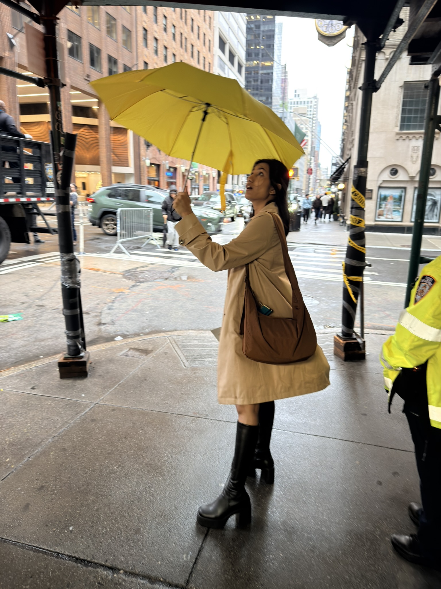

hello, I’m
Sanjana.
Your friendly neighbourhood dev.
Previously Meta. Three summers at Amazon.
I’ve moved back to India.
Based in Ahmedabad, and looking for backend and infrastructure roles in India.
Your friendly neighbourhood dev.
Previously Meta. Three summers at Amazon.
I’ve moved back to India.
Based in Ahmedabad, and looking for backend and infrastructure roles in India.

EXPERIENCE
I build backend services and infrastructure.
Now based in India and looking for my next role here.
Software Engineer · New York
Mobile networking across Instagram, Messenger, Threads, and WhatsApp. Faster requests, leaner binaries, and better diagnostics.
Software Development Engineering Intern · Seattle
Event-driven monitoring and automated ticket routing on AWS. Five minutes saved per ticket per developer.

THE PERSON IN THE PHOTOGRAPHS
Over two decades of experience in tomfoolery, dilly dallying, and lollygagging. A couple of those years also involved software engineering.
I’ve moved back to Ahmedabad, India, after studying at ASU and working in New York. Trying to rediscover my love and curiosity around building things — through the useful, the playful, and the slightly ridiculous.
M.S. + B.S. Computer Science, ASU · 4.0 GPA
Former president, Women in Computer Science: a 100+ member chapter.